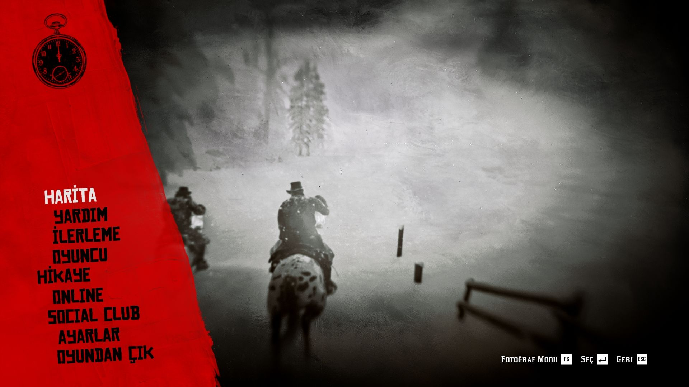

Red Dead Redemption 2 Türkçe yama çalışması için bir video ve ekran görüntüleri paylaşıldı. Büyük bir ekip tarafından uzun süredir üzerinde çalışılan yama projesinin son olarak %81'lik kısmının geride kaldığı açıklanmıştı. Yayınlanan video ile birlikte RDR 2 Türkçe yama projesinde %83'lük kısmının tamamlandığı açıklandı. Çeviri işlemi planlandığı gibi giderse yama çalışması belirtildiği gibi çok yakında bizlerle olacak.
Red Dead Redemption 2 Türkçe yama çalışmasından video geldi
Daha önce birçok projeye imza atan Anymous Çeviri grubu uzun bir süredir RDR2 Türkçe yama projesi üzerinde çalışıyor. 2 milyona yakın kelime ve 650 bin satırdan oluşan metni tamamen Türkçe'ye çevirmeye çalışan ekipte 50 kişi bu proje üzerinde çalışıyor. Oyundaki hikayenin gidişatı, diyaloglar ve ekstra görevler derken çalışma tamamlandığında Türkçe yama konusundaki en büyük işlerden birisi de olacak. Yama sayfasına, yayınlanan videoya ve ekibin bu konuda yaptığı açıklamaya aşağıdan göz atabilirsiniz.

Red Dead Redemption 2 hakkında
GTA serisi dışında L.A. Noire ve Bully gibi oyunlar ile birlikte büyük bir hayran kitlkesine sahip olan Rockstar games imzasını taşıyor. Red Dead Redemption 2, hikaye olarak oyuncuları ilk oyunun öncesine götürüyor.
Amerika, 1899. Kanun adamları son haydut çetelerini avlarken vahşi batı döneminin sonu başlamıştır. Teslim olmayanlar veya direnenler, öldürülür. Western kasabası Blackwater'da kötü sonuçlanan bir soygundan sonra, Arthur Morgan ve Van der Linde çetesi kaçmak zorunda. Federal ajanlar ve ülkenin en iyi ödül avcıları hevesle peşlerine düşmüştü. Çetenin hayatta kalabilmek için Amerika'nın engebeli toprakları boyunca soygun, hırsızlık ve dövüş ile ilerlemesi gerekli. Derinleşen bölünmeler çeteyi parçalara ayırma tehdidi doğururken, Arthur kendi idealleri ile kendisini büyüten çeteye sadakati arasında bir seçim yapmalı.